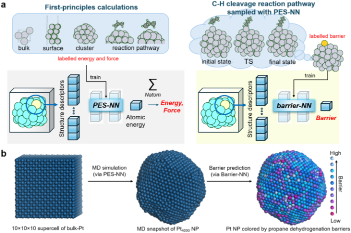
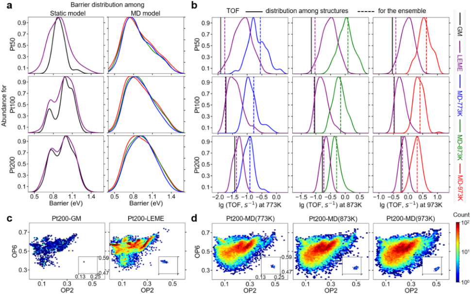
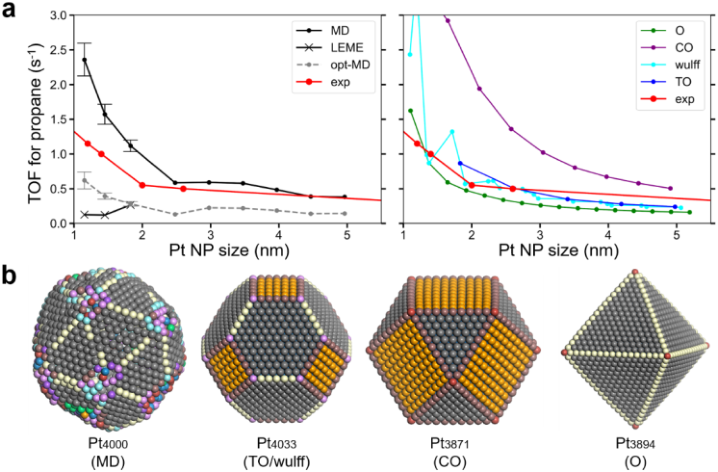
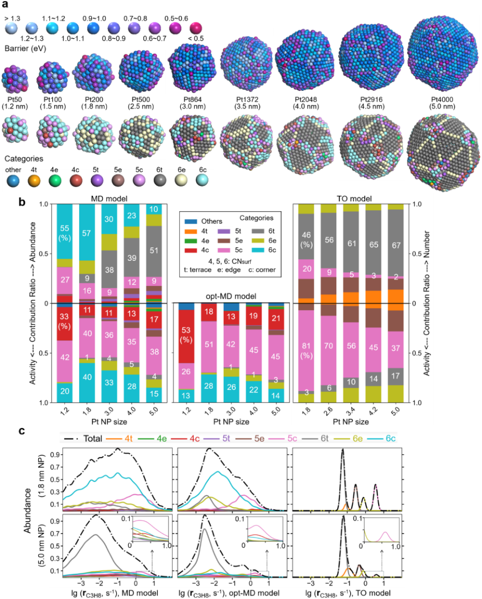
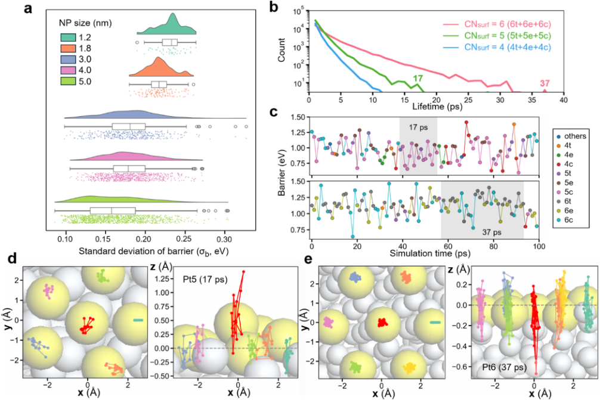
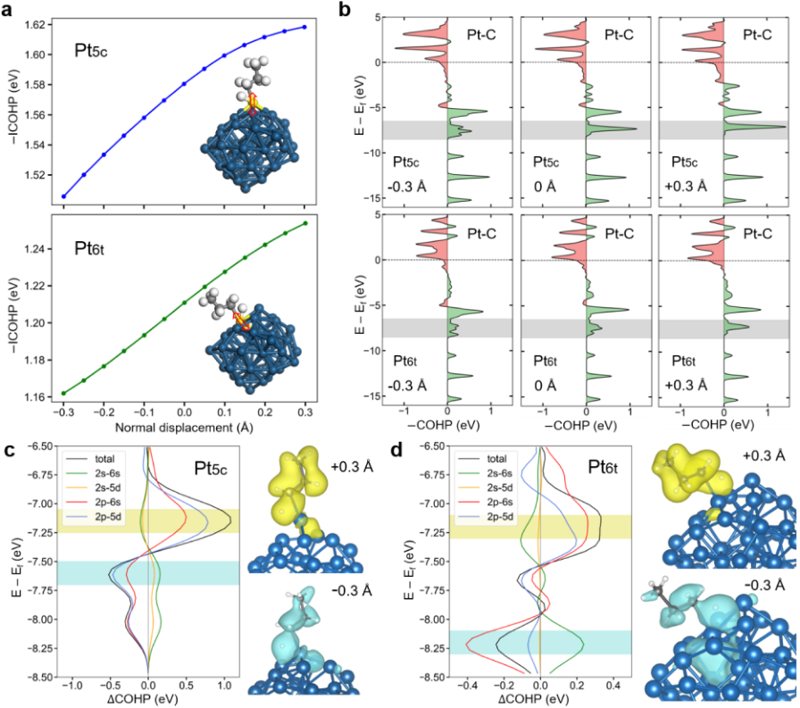

一颗Pt纳米粒子为何没有固定的“活性位”：从电子结构到颗粒活性的分层学习
论文原文 ↗原文：Dongxiao Chen、Qian-Yu Liu、Dongfang Cheng、Philippe Sautet，Dynamic Site Heterogeneity in Nanoparticle Catalysis from Hierarchical Machine Learning，JACS，2026年10月30日，DOI：10.1021/jacs.6c12929。原文 · · 数据、模型与示例代码
把Pt颗粒分成平台、边、角，再分别给它们计算一个反应势垒，是很自然的催化建模方法。但在丙烷脱氢所需的高温下，表面原子持续运动；同一个原子会变得突出或凹入，周围邻居也在改变。一个被标为“角位”的原子，在不同瞬间可能对应相差很大的反应活性。
本文要回答的是：如果让真实尺寸的纳米颗粒在反应温度下运动，并为每一帧的每一个表面原子评价反应势垒，最后得到的活性、尺寸效应和活性位认识，会与静态模型有什么不同？
机器学习势已经能让几千个原子的颗粒运动起来。更难的一步是评价反应：每个表面位点都可能对应许多种丙烷取向和过渡态，即使搜索用机器学习势加速，也无法为海量瞬时位点反复完成这一过程。作者增加第二层学习，把“给定局部环境，搜索最低过渡态”压缩为一次快速预测，终于让结构动态接上反应统计。
跨尺度究竟跨了哪几层
这套方法串联了四种描述：
| 层次 | 具体计算对象 | 向下一层传递什么 |
|---|---|---|
| 电子结构 | Pt、C、H结构的DFT能量、力与选定反应路径 | 训练势能面网络PES-NN |
| 原子运动与反应路径 | 纳米颗粒热运动；给定Pt位点上的丙烷C—H断裂过渡态搜索 | 颗粒轨迹，以及“局部环境—最低势垒”标签 |
| 瞬时位点活性 | 每一帧、每个表面Pt原子的局部环境 | barrier-NN预测的势垒及其对应速率 |
| 颗粒整体活性 | 空间上的所有表面位点、时间上的结构集合 | 平均TOF、颗粒尺寸效应、各类位点的活性贡献 |
连接这些层次的关键接口是局部环境和反应势垒。PES-NN描述原子怎样运动，barrier-NN描述处在这个环境的Pt原子能多容易地激活丙烷；统计力学与过渡态理论再把这些瞬时量变成颗粒活性。

图1｜上方两条训练链分别建立势能面与最低势垒预测；下方先生成颗粒轨迹，再为每个表面位点赋予反应势垒。
第一层：把电子结构计算变成能做结构与反应采样的势
PES-NN接收原子周围的距离和角度描述，输出各原子的能量贡献，相加得到总能量，再求导得到力。这是一种基于原子中心结构描述符的神经网络势。
训练数据的组成很重要。作者收集Pt体相、表面、团簇、分子动力学构型，还加入C₁—C₃烃类在Pt上的脱氢反应路径。后者让模型接触C—H键逐渐拉长、Pt—C键形成的区域，使它能用于寻找过渡态。
目标精度对应BEEF-vdW泛函，但作者没有给全部构型直接做同样昂贵的标注，而是采用差值学习：先用28,702个PBE构型训练基础势，再通过结构相似性聚类选出2,460个构型做BEEF-vdW计算，训练另一个网络学习两种泛函的能量和力之差。
$$E_{\mathrm{PES-NN}}(R)=E_{\mathrm{PBE-NN}}(R)+\Delta E_{\mathrm{BEEF-PBE}}(R).$$
两部分的力也相加。这样得到的PES-NN有两个用途：一是推进Pt颗粒的运动，二是在这些颗粒上搜索反应过渡态。反应路径搜索因而成为下一层模型的数据生成器。
第二层：一个Pt位点的“最低势垒标签”怎么做出来
这里最值得细看。barrier-NN所学的标签，是在一个指定、冻结的Pt局部环境上，丙烷通过最有利取向发生目标C—H断裂的最低电子能垒。
作者先用PES-NN对Pt₅₀、Pt₁₀₀、Pt₂₀₀做分子动力学，再从轨迹中根据局部环境相似性，选出约1,100个有代表性的表面Pt位点，其中100个留作测试。对每个训练位点，进行以下计算。
首先固定整个Pt颗粒在该帧的位置，把丙烷放到目标Pt附近。通过Pt—C相关约束把反应锚定在这个位点，并分别将C—H距离偏置到1.5、1.6和1.7 Å附近，进行三组约束全局优化。C—H键被预先拉长到接近断裂的区域，可以较有效地搜索不同取向的过渡态候选。
随后用约束Broyden二聚体方法，将这些候选收敛为真正的过渡态。它通过局部能量与受力寻找一阶鞍点，即沿反应方向越过峰顶、沿其他方向仍稳定的构型。
一个位点通常需要考察约300个类过渡态构型，定位约20个过渡态，最后取能量最低者。标签定义为：
$$E_b=E_{\mathrm{TS,min}}-E_{\mathrm{Pt\ NP}}-E_{\mathrm{C_3H_8,gas}}.$$
因此，丙烷的摆放、取向和不同反应路径的竞争，已经在生成标签时被搜索过。它们不再作为生产预测阶段需要逐一尝试的变量。
为增加环境多样性，作者把已有最低过渡态中的目标Pt原子沿随机方向移动不超过0.2 Å，再优化过渡态。这里沿用原来最低反应通道在小扰动下仍然有竞争力的近似，扩展训练集到6,456个局部环境；测试集不做这种增强。
第三层：把昂贵搜索压缩成一个局部环境函数
barrier-NN只接收中心Pt周围的原子环境。作者用DScribe计算5 Å截断范围内的原子中心对称函数，共371维：径向项表达邻居在什么距离，角度项表达邻居之间怎样排列。这些描述经过两个各20节点的全连接隐藏层，输出一个势垒标量。
于是，训练完成后，对一个新的表面Pt位点，只需：
取局部坐标 → 计算371维描述符 → 运行小网络 → 得到该位点的最低C—H断裂势垒。
这一步把原来包含大量构象搜索与过渡态优化的任务，摊销到了离线数据构建中。生产阶段的计算量因此可以接近一次普通原子能量预测，作者才能逐帧、逐位点评价活性。
训练标签来自PES-NN，作者又用100条反应路径的DFT结果校正其系统偏差。在补充方法中，网络原始输出Eᵦ⁰转成最终势垒的关系为：
$$E_b=0.891E_b^0-0.058\ \mathrm{eV}.$$
最终barrier-NN相对DFT的势垒RMSE为0.133 eV。在训练之外的Pt₅₀₀上，30个随机表面位点的直接DFT比较得到约0.12 eV误差。
从小颗粒走到大颗粒，依靠的是局部环境的复用：5 nm颗粒虽然有4,000个原子，但每个表面原子的5 Å邻域仍由一定范围内的Pt排列构成。作者比较了从Pt₅₀到Pt₄₀₀₀的环境分布，展示这些局部环境与训练集的重叠。整颗粒大小通过表面环境的组成和出现概率影响最终活性。
为什么可以在运动中的颗粒上冻结Pt算反应
这里用到了时间尺度分离，也就是文中的突然近似。高温下的丙烷没有长期停留在表面的稳定吸附前体；具有合适能量和碰撞取向的分子，可以迅速跨越C—H断裂过渡态。因此，一次真正跨越反应势垒的短过程，可以发生在Pt局部环境尚未明显改变的时候。
作者给出的量级是：Pt运动引起的势垒起伏约为200 fs，而从反应物走到过渡态约为10 fs。于是可以把某个瞬间的Pt几何看成冻结背景，在这个背景上定义反应势垒；换到下一帧，再使用新的Pt背景计算。
这个处理把两条运动分开了：Pt原子在PES-NN驱动下持续运动，丙烷的快速反应则由每个瞬时环境对应的最低势垒描述。数据构建时做反应通道搜索，生产阶段在轨迹上读取该通道的速率贡献。
第四层：从势垒云图得到可以比较实验的TOF
作者对Pt₅₀至Pt₄₀₀₀、约1.2—5.0 nm的颗粒进行熔化—冷却采样：先在2,000 K运行200 ps，再以每降低1 K用1 ps的速度冷却，随后在目标温度下运行100 ps，按每1 ps保存一个构型。小颗粒还与全局优化获得的最低能结构及低能亚稳结构集合比较。
对每一帧先识别表面原子。所用判据根据周围原子产生的几何方向不平衡构造指标，再分成表面与内部两类；这样能够处理不规则、热运动中的颗粒。barrier-NN随后给所有表面Pt原子预测势垒Eᵦ。
电子能垒还要加零点能与熵修正，才能进入反应速率公式。作者对100个过渡态做频率计算，以气相丙烷和过渡态的热力学校正拟合电子能垒到自由能垒的关系。与实验尺寸曲线比较所用的848 K、0.2 bar丙烷条件下，有：
$$G_b=0.966E_b+1.413\ \mathrm{eV},\qquad R^2>0.97.$$
其中截距主要来自气相丙烷的熵。这个小型校准避免了对每个预测位点再做一次频率计算。再由过渡态理论得到单个位点的消耗速率：
$$r_i(t)=\frac{k_BT}{h}\exp\!\left[-\frac{G_{b,i}(t)}{k_BT}\right].$$
先对同一帧的所有表面位点求平均，再对轨迹求平均，就得到按表面Pt归一的TOF：
$$\mathrm{TOF}=\left\langle\frac{1}{N_{\mathrm{surf}}(t)}\sum_{i\in\mathrm{surface}(t)}r_i(t)\right\rangle_t.$$
这一步保留了低势垒尾部的贡献。指数函数使少数低势垒位点具有很大的速率权重，所以不能先把所有势垒平均，再用平均势垒计算速率。以848 K估算，相同前因子下，自由能垒降低0.2 eV，对应速率约增加15倍；这是理解稀有高活性瞬间为何重要的量级示例。
结果一：更多静态低能结构，仍然补不回热运动
作者比较了三类结构：一个全局最低能结构GM；全局最低能以上2 eV以内、按玻尔兹曼权重平均的低能亚稳结构集合LEME；以及目标温度下的MD结构集合。

图2｜动态集合产生更多低势垒环境；相应的TOF分布与静态最低能、亚稳结构集合不同。
Pt₅₀的静态最低能结构主要在0.9 eV附近有一组势垒。加入更多亚稳结构能拓宽分布，但MD进一步增加低势垒位点，使平均TOF较静态模型高近一个数量级。随着颗粒增大，这种差距有所缩小，但静态结构与动态结构的活性尺寸趋势仍不同。
尤其有用的对照是opt-MD：把每一个MD快照都几何优化，再计算活性。它保留了轨迹采到的结构家族，却去掉了热运动使原子偏离局部最低点的位移。MD相对opt-MD的活性高约2—5倍，说明活性增益不仅来自发现更多结构盆地，还来自同一盆地内的瞬时热位移。

图3｜MD、优化后的MD快照、静态亚稳集合及多面体模型的尺寸—活性关系；红色为文献实验数据。
在848 K、0.2 bar丙烷条件下，MD模型较好地再现了较大颗粒，尤其2.5 nm以上的实验尺寸趋势。与之相比，静态全局优化集合低估活性，且小颗粒区间的尺寸趋势也不对。
经典截角八面体TO模型有时同样贴近实验，但它的结构仍是尖锐、规整的晶面拼接。作者通过逐位点分析发现，其正确总活性来自两种误差的抵消：缺少热运动促进作用，却保留了过于活跃的尖角与边环境。这让“总TOF相近”和“活性位认识正确”成为需要分别回答的问题。
结果二：表面数量最多的位点，不一定贡献最多反应
为解释位点贡献，作者在势垒预测之外，按表面配位数CNsurf与局部几何分类：t表示平台、e表示边、c表示角。CNsurf只数同样位于颗粒表面的邻居，区别于通常包含内部邻居的总配位数。例如5c是有五个表面邻居、局部呈角状的位点；分类用于解释，网络预测仍采用完整描述符。

图4｜随着颗粒变大，平台位点增加；低占比角位和动态圆滑表面环境仍贡献大部分活性。
在5 nm的Pt₄₀₀₀上，5c位点约占表面9%，贡献约38%的活性；6t平台约占表面一半，却只贡献约4%。6c也一直是动态颗粒的重要活性来源，而这一类圆滑表面环境在经典TO模型中缺失。
因此，粒径增大带来的活性下降，可以理解为表面环境概率分布的改变：较大颗粒形成更多低活性平台，高活性局部环境所占比例下降。位点类别内部仍有宽广的速率分布，局部几何的细节也在持续影响反应。
结果三：同一个原子会在皮秒内变成另一种活性位

图5｜同一表面原子的势垒随时间起伏；即使表面配位数暂时不变，垂直于局部表面的位移仍能显著调节反应活性。
作者追踪同一个Pt原子的100 ps轨迹，发现其势垒可从约0.7 eV升到1.5 eV，跨度达到0.8 eV。大多数固定表面配位数状态的寿命不到1 ps；即使选取配位数保持17 ps或37 ps的较长事件，势垒仍明显起伏。
这意味着动态异质性包含两种变化。第一种是邻居关系改变，位点在不同配位和平台／边／角环境之间切换。第二种是在相近环境中，中心Pt相对周围局部平面上下运动，使活性不断改变；这种变化可以发生在没有大范围颗粒重构的时候。
作者进一步在Pt₅₀的5 ps从头算轨迹上做直接DFT过渡态比较，也得到明显的势垒波动。因而活性位的“稀有”同时包含空间与时间两层含义：有利环境只在少数原子附近出现，也只持续一部分时间。
为什么Pt向外突出，会更容易断C—H键

图6｜位点法向位移改变过渡态Pt—C成键；角位与平台位具有不同的轨道相互作用。
作者选取5c角位和6t平台位，通过DFT与COHP分析追踪过渡态成键。COHP把电子态按指定原子间的成键、反键贡献分解；积分后的负ICOHP在这里用来比较Pt—C相互作用强弱。
5c位点更强的C(2p)—Pt(5d)相互作用有利于稳定过渡态；6t位点则有更明显的C(2p)—Pt(6s)贡献。对于同一种位点，当Pt向局部表面之外突出时，它与周围Pt的成键减弱，而与反应物C的成键增强，使过渡态更稳定。向内移动则加强周围Pt—Pt相互作用、削弱Pt—C成键。作者用键级守恒来解释这种竞争。
这为统计结果提供了电子层面的闭合解释：热运动改变局部几何，几何改变金属—反应物轨道相互作用，进而改变过渡态稳定性与反应速率。
最值得借鉴的是哪一段方法
这项工作的核心增量是让“每个位点的反应计算”能够跟上“每一帧的结构采样”。第一层网络加速能量与力，第二层网络进一步学习一个已经包含反应构象搜索的最低势垒函数，频率校准与过渡态理论再把预测接到整体TOF。昂贵工作主要集中在可复用的离线标签生成，生产阶段则能够遍历真实尺寸颗粒的动态环境。
对于其他目标反应，可借鉴的组织方式是：先确定真正需要统计的局部反应量，设计能够代表该反应中心的环境输入，用可靠反应搜索产生标签，再将这个局部映射接到大量构型与动力学统计上。本文用丙烷首次C—H断裂实现这一链条，并据此改变了对纳米颗粒活性位的认识：一个位点的贡献由它处于什么环境、这种环境出现多久，以及当时的速率共同决定。
原始摘要完整中文翻译
识别催化纳米颗粒上所有单独表面位点的活性，是一项具有挑战但对多相催化剂至关重要的任务，尤其对于理解位点异质性而言。在此，我们开发了一种分层机器学习方法，将原子局部环境与能量和反应势垒预测联系起来，且两者计算成本相近，使广泛探索纳米颗粒催化剂的催化反应性成为可能。将该方法应用于973 K反应温度、尺寸最大为5 nm的Pt纳米颗粒上的丙烷脱氢，揭示了高度动态且异质的活性：丙烷C—H断裂势垒具有宽广分布，范围为0.5—1.3 eV，并存在稀少的极高活性或极低活性位点。传统全局优化方法会低估催化活性，即使考虑大量亚稳结构也是如此。相反，使用分子动力学轨迹的集合平均，能够得到准确的活性及尺寸效应趋势，强调了位点活性与异质性的动态本质。值得注意的是，经典多面体模型，例如通过Wulff构造获得的模型，可以预测较大纳米颗粒的正确趋势，但这来自缺失动力学与高估亚稳位点出现概率之间的误差抵消。此外，我们的模拟揭示，在反应温度下，同一个表面Pt原子在100 ps轨迹内的势垒会快速波动，变化可达0.8 eV，表明单个原子能够在皮秒时间尺度上于活性与非活性状态之间切换。这项工作提供了一种可行方法，使对催化剂的认识从静态活性位的组合，转向高度异质且快速动态演化的位点。